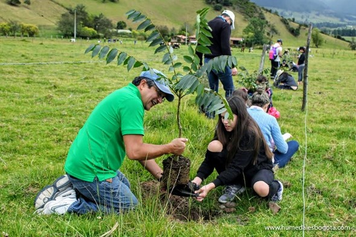
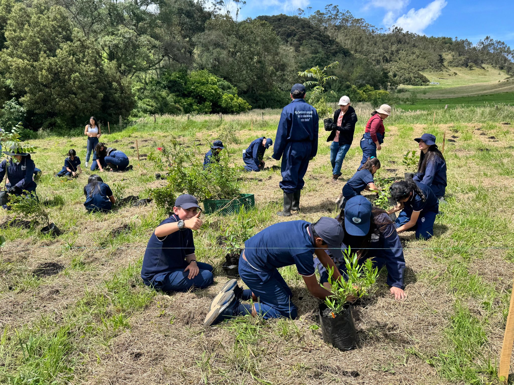

Publicado el 25 de septiembre de 2025
En una jornada que reunió a voluntarios, estudiantes, funcionarios de la Secretaría de Medio Ambiente y miembros de colectivos ambientales, se sembraron más de 500 árboles nativos en los alrededores de la Laguna de La Herrera, uno de los ecosistemas más importantes del municipio de Facatativá.
 La jornada, organizada en conjunto con la CAR Cundinamarca y el programa Guardianes del Bosque, tuvo como objetivo restaurar áreas afectadas por la deforestación y mejorar las condiciones del hábitat de aves migratorias y especies acuáticas que habitan en la zona.
Según Daniela López, coordinadora ambiental del proyecto: “La reforestación en la Laguna no solo es un acto simbólico, sino un compromiso con la recuperación de los ecosistemas locales y la conciencia ambiental de las nuevas generaciones.”
La comunidad educativa de varias instituciones de Facatativá participó activamente, mostrando gran entusiasmo por aprender sobre la siembra, el cuidado de los árboles y la importancia de los ecosistemas hídricos.
En total, se plantaron especies como arrayanes, alisos y robles andinos, seleccionadas por su resistencia y compatibilidad con el suelo y el clima de la región. Estas especies contribuyen a la recuperación del corredor biológico que conecta la Laguna de La Herrera con zonas boscosas cercanas a los cerros.
La CAR anunció que se realizará un seguimiento semestral para verificar la supervivencia de las plántulas y el avance del proceso de restauración. Además, se planean nuevas jornadas de reforestación con participación ciudadana durante el próximo año.
← Volver al inicio